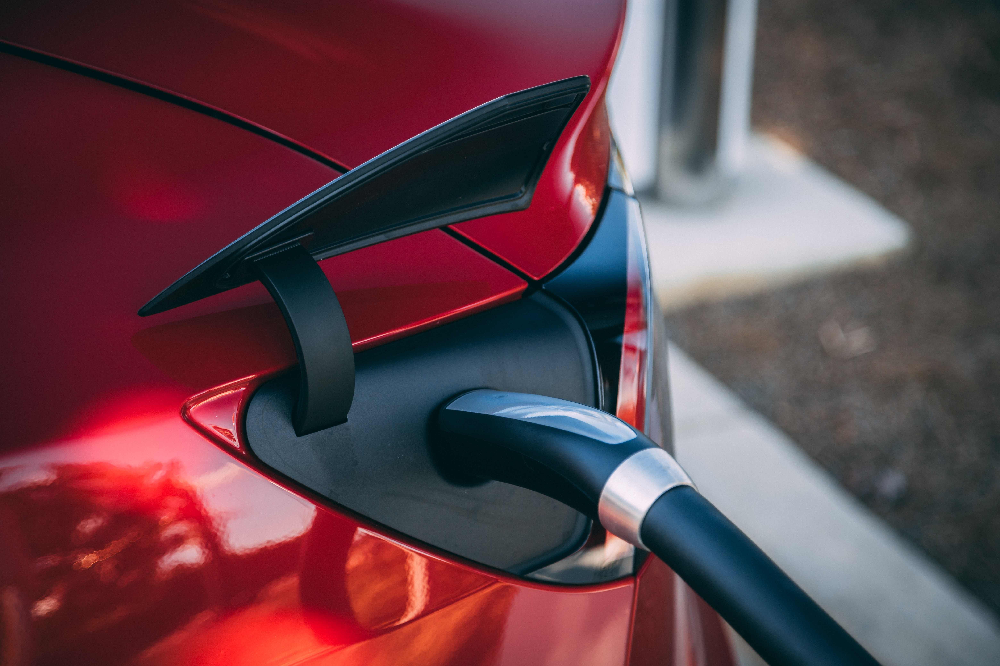

Tools Used
Initiated By
- Norwegian Government
Results
- Electric vehicles outsold petrol and diesel vehicles
- Norway achieved the highest market penetration of electric vehicles per capita in the world
Case Study PDF
Landmark Case Study
Norway’s Promotion of Electric Vehicles
Several policies / incentives, in place over an extended period, have made Norwegians more likely to purchase electric vehicles (EVs) than people in any other country. These incentives have included: exemption from vehicle registration and high purchase taxes, reduced road tolls, free parking, and access to some bus lanes. A similar long-term approach could be adapted for other big-ticket purchasing behaviors where the impact justifies the expense – for example energy-efficient home / building retrofits and appliances. Norway's electric cars are close to zero-emission as 98% of its electricity came from hydropower. Designated a Landmark case study by our transportation panel in 2024.
Background
Note: To minimize site maintenance costs, all case studies on this site are written in the past tense, even if they are ongoing as is the case with this particular program.
Norway actively supported the adoption of zero emission vehicles since the 1990’s. Its electric cars were close to zero-emission as 98% of its electricity came from hydropower. Switching to vehicles powered by electricity rather than fossil fuels was therefore a practical option for reducing air pollution, including greenhouse gas emissions.

Photo courtesy of Unsplash and Vlad Tchompalov
Getting Informed
Barriers
Consumer surveys indicated that the key barriers to Norwegians purchasing an electric vehicle were the additional purchase cost and lack of information. Range anxiety was less important, and Norwegians had a strong preference for home charging. This was corroborated by the relatively low use of the public charging infrastructure, once in place.
Motivators
According to surveys, lower operating costs, followed by environmental concerns were the two most important motivators. However, norm appeals and/or word-of-mouth (social diffusion) were also important; a 2017 survey found that on average each electric car owner had inspired 2.4 other people to purchase an electric car.
Delivering the Program
Incentives
Norway provided a number of financial incentives for battery-powered vehicles. These generally paid for themselves, with taxes on standard cars generally covering the cost of the financial incentives.
The following taxes were charged on standard vehicles. Electric cars were partly of fully exempt from the first nine.
- 25% Value Added Tax (VAT) (exempt)
- Graduated vehicle registration tax (exempt)
- Reregistration tax on second hand sales (exempt)
- Annual circulation (ownership) tax (exempt)
- Fuel tax (not applicable)
- Road tolls (exempt or partly exempt)
- Ferry fares (lower fees)
- Public parking fees (often fully exempt)
- Income tax on private use of company cars (lower rates)
- Weight and Euro-class-graduated annual ownership tax on heavy-duty freight vehicles
These ten funds paid for the following financial incentives.
- Exemption from the above taxes for electric vehicles, set to more than compensate for the higher price of an electric vehicle compared with a conventional one.
- Government support for fast charging and hydrogen refueling facilities
- Free recharging of electric vehicles at public parking lots
- Subsidy on new battery or fuel cell electric light commercial vehicles
- Subsidies on zero emission heavy-duty vehicles and machinery
In addition, gas taxes and gas prices were relatively high in Norway, making it relatively costly to drive a gas-fueled car, and battery-powered vehicles were able to use bus lanes.
Key milestones are outlined below (based largely on Wikipedia).
|
1990 |
· Temporary (trial) exemption from import tax |
|
1996 |
· Import tax exemption made permanent · Annual registration tax reduction introduced |
|
1997 |
· Exemption from road tolls introduced |
|
1999 |
· Identifying letters ("EL", "EK" and "EV") introduced on license plates of electric vehicles to facilitate the enforcement of EV incentives and perks. It had the added benefit of raising the visibility of these vehicles (norm appeal, word of mouth)) · Free parking in public places introduced · Free passage through toll booths introduced |
|
2000 |
· Reduced company car tax introduced |
|
2001 |
· VAT tax reduced from 25% to 0 |
|
2003 |
· Access to bus lanes tested in Oslo |
|
2005 |
· Access to bus lanes launched nation-wide |
|
2009 |
· Free access to road ferries introduced |
|
2012 |
· Incentives extended until 2018, or when the 50,000 EV target is achieved |
|
2015 |
· Incentives extended through 2017 after achieving 50,000 EV target, with a gradual reduction of incentives gradually starting in 2018 · Local authorities got the right to decide for their own regions if EVs could use bus lanes and get free parking |
This combination of incentives enabled Norway to meet its target (50,000 EV), in the process becoming the worlds’ greatest per-capita purchaser of EVs.
Charging Infrastructure and Overcoming Barriers
While range anxiety was a lower barrier than others, Norway still saw public charging points as important, as they ensured interregional access and were essential for electric car owners that do not have access to a reserved parking place. Norway therefore ensured an adequate distribution of charging stations early in the program.
The following table lists the key barriers to action and how they were addressed.
|
Barriers |
How they were addressed
|
|
Higher cost of electric cars compares to conventional ones
Entrenched car purchasing habits
|
· Reduced the up-front cost of purchasing a new vehicle by exempting new electric vehicles from vehicle registration and high purchase taxes · Reduced relative operating costs by keeping taxes high on gasoline, and by providing some free parking and lowering road tolls for electric vehicles · This barrier may have been less important in Norway compared with other countries, since Norwegians drive shorter distances than those in regions like Australia and North America.This barrier may have been less important in Norway compared with other countries, since Norwegians drive shorter distances than those in regions like Australia and North America. · While less important than cost, an adequate distribution of charging stations helped allay these concerns. |
Critiques
Criticisms of the approach have included the following.
- High public subsidy compared to the value of the reduced carbon footprint of electric vehicles
- Traffic congestion in some bus lanes due to the increased number of electric cars
- Some people bought an electric vehicle as a second car instead of taking buses and trains
- Loss of revenue for some ferry operators due to the large number of electric cars exempted from payment
- Shortage of parking spaces for owners of conventional cars
Measuring Achievements
Two measures were used.
- EV share of new car sales
- EV share of cars on the road
Results
- In March 2014, Norway became the first country with at least 1 in every 100 passenger cars on the road that were battery-powered.
- In 2015, Norway achieved its target of selling 50,000 EVs
- By December 2016, 5 in every 100 passenger cars on the road in Norway were battery-powered.
- By December 2018, 10.7 in every 100 passenger cars on the road in Norway were battery-powered. In comparison, the USA had 0.45 cars (California had 2.1), Sweden had 0.6 cars, and Europe on average had 0.5 cars per 100 passengers.
- In March 2018, Norway had the world's largest plug-in segment market share of new car sales at 49.1%. The next highest share for new cars was Iceland at 19%. Canada had 2.1% B.C. was third in North American jurisdictions at 4.0%, behind California at 7.8%., and Washington state at about 4%).
- In March 2019, Norway recorded the first ever month where electric vehicle sales had a majority market share (58%) over traditional petrol and diesel vehicles. Norway had the highest market penetration of electric vehicles per capita in the world (10% of all passenger cars on the road).
Notes
This approach can be used elsewhere to promote electric vehicles. That said, Norway has had the added advantage that Norwegians drive relatively short distances, so relatively inexpensive electric cars with relatively short ranges have been more practical than in countries like Canada and the USA. However, this difference is becoming less important as technologies evolve (e.g. affordable new batteries that allow for greater ranges.)
While Norway has been in a unique position to pioneer the introduction of electric vehicles, its model of providing a range of suitable incentives to overcome key barriers, paid for by taxing more polluting vehicles, is nonetheless widely replicable for the following reasons. This is not to say that all their policies would work in all other contexts.
- The overall approach is to use taxes on standard vehicles to pay for incentives for purchasing electric vehicles. Such programs can cover their own costs this way, or at least reduce public funding required.
- Large incentives were required initially to offset the higher initial cost of electric cars. However, this cost difference has narrowed over time as more electric vehicles are manufactured and is expected to become insignificant soon.
- While travel distances tend to be shorter in Norway than in regions like North America and Australia, battery innovations have more than doubled the distance that an average electric vehicle can go before needing to be recharged. This, combined with well-distributed public charging stations and much shorter recharge times, is helping to minimize range anxiety.
- Multiple countries are now collaborating to foster the spread of electric vehicles. The Electric Vehicle Initiative is a multi-government policy forum established in 2009. In 2017, its 13 member countries set a collective aspirational goal of 30% market share for electric vehicles (for passenger cars, light commercial vehicles, buses and trucks) by 2030. Eight members, including Norway, committed to electrify their own fleets (Government Fleet Declaration.)
- While Norway is contextually unique and its approach required multiple levels of buy-in/support, the following table reflects the growing number of counties, operating under different conditions, that have been able to achieve effective policies and incentive/disincentive structures.
|
Country |
Incentives for Electric Vehicles / Disincentives for Other Vehicles |
Impact as of 2021 |
|
China |
· Purchase incentives, scaled to car range. The incentives were reduced in 2019 and were to expire in 2020 at the height of the COVID pandemic. However, when sales started to plummet the incentive was extended for two more years and sales rebounded. |
· Sells more electric vehicles than any other country – roughly half of sales worldwide; also has a huge population |
|
France |
· Purchase incentive – initially 6,000 Euros, up to 27% of vehicle value · Scrappage incentive for retiring older petrol or diesel models - up to 2,500 Euros. · Surcharge for highest emitting cars – up to 10,000 Euros |
· Fourth in terms of number of electric vehicles sold each year |
|
Germany |
· Purchase incentive – initially 4,000 Euros · Exempt from vehicle tax for up to 10 years · 50% reduction in income tax assessed on vehicle ownership · Tax bonus based on battery size; amount per battery was reduced each year |
· Next to China, sells the most electric vehicles each year |
|
Iceland |
· Like Norway, Iceland has low electricity prices paired with high fossil-fuel prices · VAT sales tax discounts and exemption until 2020 · The City of Reykjavik offers free charging as well as time-limited free parking for low-emission vehicles. · Excise tax based on CO2 emissions and waived for pure electric cars |
· Third most electric vehicles per capita · Starting in 2020, the majority of new car sales have been electric vehicles |
|
Netherlands |
· No vehicle tax until 2020 · Company car drivers who also use the vehicles privately, pay income tax of only 4% of the sales value when selling an electric car, rather than 22%. · Vehicle registration tax based on CO2 emissions and waived for pure electric cars |
· Fifth most electric vehicles per capita |
|
Sweden |
· Purchase incentive – initially 60,000 Swedish Krona (5,700 Euros) up to 25% of vehicle value · For companies, the purchase incentive cap is 35% of the increased cost compared with a similar petrol or diesel vehicle. · The incentive is reduced for every gram of CO2 emitted per km |
· Fourth most electric vehicles per capita |
|
USA |
· Federal taxes that depend on fuel consumption are waived · Tax credit of up to 7,500 US dollars per buyer for up to 200,000 units per manufacturer · Some US cities gave HOV access to low-emission vehicles until they became more common |
· Second to Norway in number of electric vehicles per capita · Third in terms of number of electric vehicles sold each year |
Further Reading
https://en.wikipedia.org/wiki/Plug-in_electric_vehicles_in_Norway
https://www.nsenergybusiness.com/news/electric-vehicle-registrations-europe-norway/
Landmark Designation
The program described in this case study was designated in 2024.
Designation as a Landmark (best practice) case study through our peer selection process recognizes programs and social marketing approaches considered to be among the most successful in the world. They are nominated both by our peer-selection panels and by Tools of Change staff and are then scored by the selection panels based on impact, innovation, replicability, and adaptability.
The panel that designated this program consisted of:
- Aaron Gaul, UrbanTrans
- Nathalie Lapointe, Federation of Canadian Municipalities
- David Levinger, Mobility Education Foundation
- Nicole Roach and Charlotte Estey, Green Communities Canada
- Jessica Roberts, Alta Planning + Design
- Lisa Kay Schweyer, Foursquare ITP
- Phil Winters, CUTR and the University of South Florida
This case study was written in 2020 by Jay Kassirer.